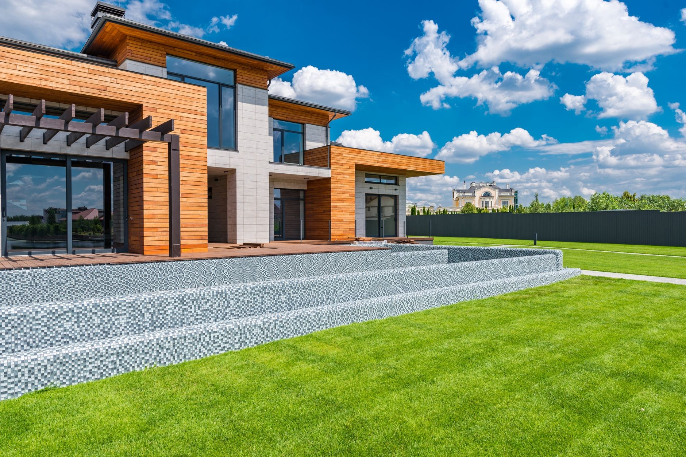

Strugamy deski elewacyjne, tarasowe i podbitkę, stawiamy więźby dachowe, wiaty i altany. Drewno tniemy na miejscu, więc materiał i robociznę bierzesz z jednych rąk.

Panek Jarosław. Usługi stolarsko-ciesielskie działa od 2009 roku w Trójni pod Lubartowem. Zaczynało się od tarcicy i usług ciesielskich, dziś obok tartaku pracuje strugarka, z której wychodzi deska elewacyjna, tarasowa, podbitka i boazeria.
Klient może wziąć sam materiał albo zamówić robotę w całości: więźbę, wiatę czy altanę z drewna, które przygotujemy u siebie. Zamówienie na kilkadziesiąt metrów deski przygotowujemy na umówiony dzień, bez przeciągania terminu.
Poznaj nas →Deski, które schodzą ze strugarki, i konstrukcje postawione u klientów w okolicy Lubartowa.


Zadzwoń z wymiarami albo wyślij zdjęcie budynku. Odpiszemy z ceną materiału i terminem, kiedy będzie gotowy.